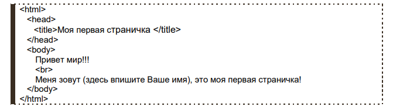

Версия для печати раздела "Учебник HTML" сайта www.webremeslo.ru
Этот учебник целиком и полностью посвящён языку HTML, без знаний которого не обойтись в создании какой либо веб-страницы. HTML язык - это основа, база которую просто таки необходимо знать любому начинающему веб-мастеру! Этот язык, сам по себе (в чистом виде), достаточно простой, думаю его с легкостью может освоить любой "продвинутый" шестиклассник.. в тоже время он позволяет самостоятельно создавать полноценные страницы и сайты. Рассчитан этот HTML учебник для начинающих "с нуля" людей, которые только только решили освоить веб-ремесло, поэтому старался писать его как можно более развернуто и что называется "доходчиво", в тоже время стараясь охватить весь курс до мелочей, так что может быть и опытный веб-мастер найдет в нём для себя что-то новое или будет использовать его в качестве "шпаргалки", изложенной в прилагаемом справочнике тегов: (http://www.webremeslo.ru/spravka/spravka.html) Где нет "воды" и нудноватого для уже опытного человека "разжёвывания" материала. Ну и сразу к делу.. начнем с классики.. Откройте блокнот, да да, тот самый блокнот.. Пуск> Стандартные> Блокнот и напишите в нем следующий текст:
Далее, сохраните этот текст как html документ, название придумайте сами.. главное чтобы расширение было html Повторюсь, чтобы не было казусов.. в блокноте кликаем по меню "Файл", выбираем "Сохранить как.." в строке "Имя файла" пишем: index.html, просто по умолчанию блокнот предлагает сохранить файл с расширением *.txt, а нам нужно расширение *. html Далее открываем этот файл при помощи Вашего браузера.. ну к примеру того же Internet Explorerа (правой кнопкой по нашему файлу.. "Открыть с помощью.." Internet Explorer)
Если в Вашей душе загорелась искорка, проснулась тяга к знаниям и творчеству, предлагаю планомерно ознакомится с главами этого учебника. В них на доступном языке с множеством примеров я постараюсь объяснить то, что мы только что написали, а так же как сделать этот документ более привлекательным, вставить в него графику, таблицы, прописать ссылки.. в общем, сделать его полноценным сайтом, заслуживающим место во всемирной паутине.